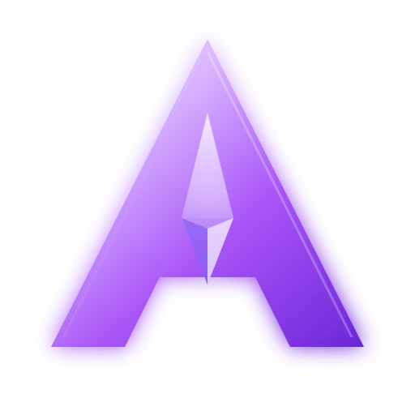

Quickshell
A custom shell for the panel, workspaces, status surfaces, and the AURORA visual language.

AMETHYSTOS · AURORAAmethyst OS is a clean, fast Linux experience shaped around Hyprland, a custom Quickshell desktop, and a deliberately minimal AURORA aesthetic.
AURORA STACK
Amethyst is designed around a focused set of Wayland-native tools instead of a pile of overlapping desktop layers.
A custom shell for the panel, workspaces, status surfaces, and the AURORA visual language.
Wallpaper-derived colors flow into the desktop, terminal, and launcher for one visual system.
Simple Super-key bindings, quick launch, workspaces, media controls, and practical defaults.
Configs, artwork, build files, and the desktop itself live together in the project repository.
WHY AMETHYST
Everything is tuned to feel cohesive from the first boot: compositor, shell, terminal, installer, and artwork all share the same visual language.
Wayland-native and responsive, with a workflow designed around keyboard-friendly control.
Rounded surfaces, soft glow, glassy depth, and a purple-forward visual system.
Zsh, Fastfetch, Kitty, AURORA shell, networking, power management, and practical defaults.
Open configuration and a website that is intentionally easy to fork and customize.
THE COMMUNITY
Amethyst OS is a fun project built in public. Development, ideas, testing, feedback, and general Linux chaos all have a place.
Join the Amethyst OS group and chat with the people following AURORA.
Join the group ↗The ISO profile, shell, branding, configs, and build files live openly on GitHub.
Open GitHub ↗Boot an AURORA build, break something, fix it, and send back the useful bits.
The desktop is intentionally open to ideas — from shell polish to artwork and tooling.
AMETHYST OS
Browse the source, follow development, join the community, and grab releases when they are published.
ISO downloads will appear here when the first public AURORA release is ready.